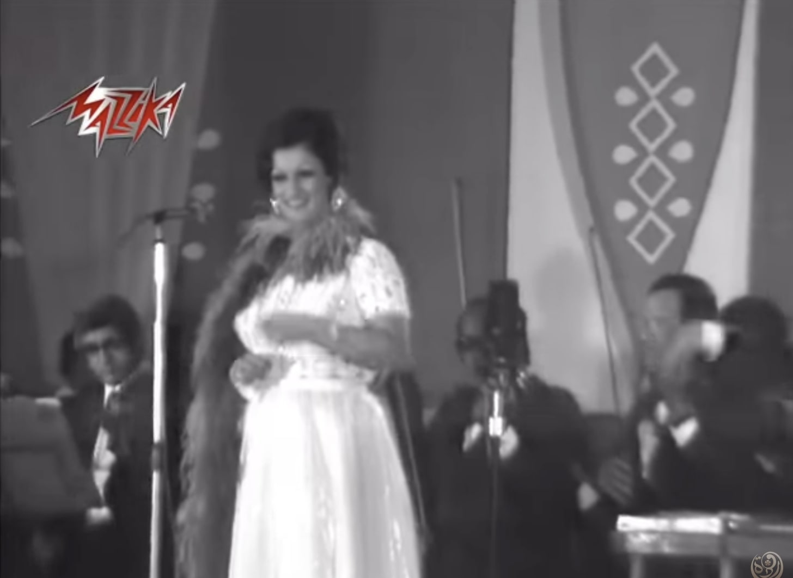

لقطة من حفل أغنية "طب وأنا مالي" - القاهرة
لعل من أوائل ذكرياتي الموسيقيّة استبعاد وردة الجزائريّة من التسجيلات التي تمتلكها لوالدتي، فلم يكن هناك غير شريط تسجيل واحد فقط لوردة يحتوي على مجموعة منتقاة بدقّة شديدة من مجمل أغانيها التي قاربت على الـ ٣٠٠ أغنية. كانت والدتي من هؤلاء المؤمنين بأن وردة "بلدي"، وأنّها أساءت اختيار الكثير من أغانيها، كما أساءت الأداء. فكانت تفسر نفورها منها بقولها: "إنها تنتمي إلى مدرسة الصراخ"، إشارة منها إلى أسلوب الأخيرة في استخدام تردّد صوتي يزيد من جهارة صوتها، ولو كان هذا على حساب استخدام تردد صوتي حاد نوعاً ما.
لم تكن والدتي الوحيدة التي نعتت وردة بأنّها "بلدي"، فلقد اكتشفت بعد ذلك التسمية الشهيرة التي حظيت بها من قطاع ليس بصغير من الناس أنّها "مطربة سواقين التاكسي"، إشارة إلى ربط الذوق بالمستوى الاجتماعي والاقتصادي، وبالتالي يصبح تفضيل سائقي سيارات الأجرة دلالة على فساد ذلك الذوق لغياب القدرة على التمييز الغث من الرديء. وإشارة إلى منهج وردة في الغناء والأداء الذي اتسم بغياب من المنهج والرؤية الفنيّة التي من شأنها إعلاء ما يبعث على التفكير على ما هو مسلٍّ أو محبّب إلى النفس.
الكيتش كوسيلة لشل التفكير
ويتطلّب منا هنا تحديد أو تعريف مصطلح "بلدي" أو "كيتش". "كيتش" كلمة ألمانية الأصل، وتعني لغويّاً: لطخ أو يلطّخ كما يفعل المرء مع مادة ليّنة، تم تقديمه في أواخر القرن التاسع عشر في أوروبا كوصف الأعمال الفنيّة التي تتخذ الإنتاج الفني من حيث تقليد أعمال "الثقافة العالية" وجعلها متاحة على المستوى الجماهيري كهدف، آخذة في الاعتبار ذوق وتفضيلات تلك الجماهير بشكل مبسّط وخالٍ من التفكير والتعقيد عن طريق تحريك مشاعرهم بفجاجة وسذاجة.
ما يثير التساؤل حول إذا ما كان هذا التلاعب بالمشاعر أو استدرار العواطف وسيلة لشل التفكير أو وقف العمليّة المنطقيّة التي من الممكن أن ترفض رد الفعل العاطفي على حساب رد فعل عقلاني يرى ذلك التلاعب ابتزازاً وليس استلهاماً لحالة عاطفيّة.
يرى المتخصصون في علم الجمال أن استدرار العواطف بشكل سطحي أو ساذج يتضمّن لحظة انغماس في الذات دائماً ما تؤدّي إلى نوع من الشعبويّة التي تخلط الأمور بشكل فوضوي، يكاد يكون متوحشّاً. وهذا هو ما يربط الجانب الجمالي للكيتش بالجانب الأخلاقي، الأمر الذي يثير حفيظة منظري الأخلاق لاحتمال ربط تلك الشعبويّة بعملية سياسيّة مثل صعود النظم الفاشيّة والنازيّة.
ولكن هذا ليس ما يركّز عليه المقال، فالتركيز هنا على الجماليّات التي يتم استخدامها للتلاعب بالمشاعر بشكل سهل أو فج من دون إعطاء المساحة أو الفرصة لمن يستقبل ذلك العمل الفرصة لفهم أو تدبر ذلك الرد الفعل العاطفي. إذ يرى البعض أن في هذا التساهل والتبسيط إعلاء لقيمة التكرار والتماهي وتمجيد ما هو مألوف وما هو متعارف عليه على حساب قيم الإبداع والتدبّر، ما يمنع تطوّر موقف نقدي تجاه العمل وتجاه موقفنا منه. ومن هنا يظهر التساؤل: هل يمكن أن نستعيض عن مصطلح "كيتش" بمصطلح "بلدي"؟ وماذا يمكن أن يكشف مصطلح "بلدي" من مفاهيم أو أفكار تقارب مصطلح "كيتش"؟
يشير مصطلح "بلدي" بشكل أساسي لمجموعة من الذوقيّات التي ترتبط بشكل مباشر بطبقة اجتماعيّة، والتي تقترن في ذهن القارئ بجماليّات "مفتعلة"، "مبالغ فيها"، "غير متسقة"، "رخيصة"، "تم تنفيذها بشكل يخلو من الدقة"، وغيرها من التوصيفات. ورغم وجود ذلك البعد الطبقي الذي يربط بين تلك الجماليّات وفئة اجتماعيّة بعينها، تبقى معظم تلك الروابط أو التداعيات متشابهة إلى حد كبير مع دلالات مصطلح "كيتش" مع عدم ارتباطه بنفس التجربة التاريخيّة فيما يخص موسيقى وردة على سبيل المثال.
يبيّن لنا بحث سريع عن تاريخ وردة الفني والأدائي علاقة محتوى ذلك العمل الفني بمفهوم مثل" الكيتش"، وكيف "أبدعت" وردة عمليّة فنيّة تداخلت مع الكثير من تلك الدلالات والعناصر التي تحدّد مفهوم "الكيتش".
مراحل الكيتش لدى وردة
ولدت وردة فتوكي في فرنسا العام 1939 من أب جزائري وأم لبنانيّة. بدأت الفنانة حياتها الغنائيّة بالغناء في صالات الغناء في باريس. بعدها عملت في الإذاعة لفترة، وفي أثناء حرب الاستقلال انتقلت إلى بيروت وغنت في كباريهاتها، وهنا تقول الأسطورة أن عبد الوهاب استمع إلى غنائها وطلب منها الحضور إلى مصر.
ينقسم تاريخ وردة الفني –بشكل ملائم تاريخيّاً– إلى ثلاث مراحل: المرحلة الأولى، وهي من أواخر الخمسينيّات حتى 1963، والمرحلة الثانية من العام 1972 حتى 1985، وهي مرحلة بليغ حمدي التي يركز عليها المقال. والمرحلة الثالثة والأخيرة هي بداية التسعينيّات وحتى وفاتها. وسيتم التركيز على المرحلتين الأولى والثانية بالأساس، لأن المرحلة الثالثة هي امتداد لما سبق مع الاختلاف في غياب بليغ حمدي كشريك فني رئيسي لوردة.
ولعل أصدق مثال على ذلك هو أغنية السنباطي لعبة الأيام (التي تم تصويرها كعمل مستقل غير مرتبط بفيلم أو قصّة معيّنة أو جزء من عمل فني آخر ما يجعلها من أوائل تجارب الأغاني المصورة في المنطقة العربيّة). لا تكاد تظهر شخصيّة وردة على الإطلاق في هذه الأغنية. فهي أغنية السنباطي شكلاً وموضوعاً، إذ استخدم وردة كآلة موسيقيّة من آلات الأوركسترا ليتم توظيفها لإظهار تلك الرؤية الموسيقيّة، فلم تترك لوردة أي مساحة لتظهر شخصيّتها كمؤدية أو كمطربة. لكن أبرز ما ظهر –بجانب رؤية السنباطي الموسيقيّة– هو مقدراتها التقنيّة على الغناء، والتي سيحاول كل من لحن لها في هذه الفترة استغلالها إلى أقصى درجة.
مثال آخر أغنية "اسأل دموع عينيا" من فيلم ألمظ وعبده الحامولي (1960) من تلحين عبد الوهاب. وفي تسجيل نادر، نرى بادرة من بوادر شخصية وردة، وهي تركيزها الشديد في التواصل مع الجمهور، ولكن مع غياب حس كلي للتجربة الموسيقيّة وتناغم عناصرها. ورغم أن أداء وردة "جاد" و"كلاسيكي"، لكنه يفتقد لدرجة معينة من الانضباط سوف تظهر بوضوح أكثر مع ملحنين أقل جموداً مثل عبد الوهاب.
المرحلة الثانية: تركت وردة مصر بعد العام 1963 (تكاثرت الشائعات حول أسباب رحيلها وتم ربطها بأن ذلك كان قراراً سياسيّاً لارتباطها بالمشير عامر في تلك الفترة). عادت وردة إلى الجزائر حيث تزوّجت واستقرّت هناك لمدة عقد من الزمن. وفي العام 1972، قرّرت العودة مرة أخرى للغناء، وفعلاً في نفس العام استقرّت في مصر مرة أخرى وتزوّجت بليغ حمدي وبدأت العمل في فيلمها الشهير "حكايتي مع الزمان" (1973) من إخراج حسن الإمام.
يتضمّن الفيلم مجموعة أغانٍ يمكن اعتبارها المثال الأوضح على تلك المرحلة، والتي تظهر فيها بشكل جلي شخصيّة وردة كمؤدية ومطربة. لن تتغيّر وردة كثيراً عن تلك الشخصيّة، وستستمر طريقتها وأسلوبها على هذا الحال حتى وفاتها.
تعتبر أغاني الفيلم من أكثر أغاني وردة انتشاراً على الإطلاق. فعلى سبيل المثال أعلى نسبة مشاهدة لـ "لعبة الأيام" على يوتيوب هي حوالي 76438 مشاهدة في مقابل ما يعادل نصف مليون مشاهدة لأغنية "لولا الملامة".
ولا ينقذ الأغنية من ميلودراميتها أي شيء غير الاعتراف بأنها استثارة سهلة ومفتعلة لمشاعر المشاهد/ المستمع من دون استيعاب المبالغات الشديدة والتشبيهات المبتذلة، أو أداء وردة الدرامي مع موسيقى بليغ التي تتأرجح بين مارش جنائزي وموّال حزين.
وإذا ما قرّرنا أن نقسو في الوصف، فالأغنية برأيي استحقت مكانتها كأكثر أغاني وردة ابتذلاً على الإطلاق، حتى وصلت درجة الـ"Gay Camp": وهو نوع أعنف من الكيتش يستوعب فيه المثليين التراث الأدائي للمسرح الغنائي والأغاني الحزينة أو الدراميّة، ويعيدون أداءها بشكل أكثر مبالغة بحس فكاهي ساخر. ولو كان هناك ما يسمى بـ"موسيقى المثليين" (مع عدم اعترافي بمثل هذا المسمى) لكانت أغاني وردة من أوائل الأعمال الفنية التي يتم إعادة تمثيلها كـ"gay camp".
استمرّت وردة في العام التالي بالتمثيل، وصدر لها فيلم "صوت الحب" (1974) من إخراج حلمي رفلة. وهنا غنّت أيضاً مجموعة من قائمة أغانيها المشهورة حاز فيها بليغ على نصيب الأسد كالعادة. ومن أغاني الفيلم التي تستحق التوقف عندها هي أغنية "طب وأنا مالي" التي تجتمع فيها نفس عناصر شراكة بليغ ووردة بشكل يدل على توافق رؤاهما وذوقهما. وسأوضح ذلك من خلال تسجيل حي للأغنية من حفلة غنّتها فيها وردة في نفس العام. يمثّل حضور وردة وأداؤها عناصر الكيتش بشكل أوضح في هذا التسجيل، فنراها مرتدية ريش نعام، وفي ظل غياب الألوان ما زالنا نرى لمعان الفستان الذي ترتديه مع ارتدائها حلي بمثل ذلك البريق أن لم يكن أكثر بريقاً منه.
أما عن أداء وردة، فإذا قارناه بأدائها في "لعبة الأيام"، أو "اسأل دموع عينيّا" يظهر لنا مباشرة تحرّرها التام من الشكل الكلاسيكي "الجاد" في الغناء، واعتمادها بشكل تام على تفاعل الجمهور على حساب عزف الفرقة أو تناغم أدائها مع أدائهم (استبقت الفرقة في عدة مواقع ما أدّى إلى فرق في الزمن والنغمة)، فتكاد ألا تكون الفرقة إلا وسيلة لوردة لتغني ما تشاء من دون الأخذ في الاعتبار وحدة العمل الفني أو منطق الأداء.
وفي نفس السياق، نجد مثالاً آخر في أحد أفلام وردة في تلك الفترة وهو فيلم "آه يا ليل يا زمن" (1977) من إخراج علي رضا، والذي غنت فيه أغنيتها الشهيرة "مساء النور و الهنا" من تلحين بليغ حمدي الذي تتميّز خلفيته بتشابه كبير بين حياة وردة وكيف بدأت احتراف الغناء وهي شابة في صالات الغناء في باريس وبيروت وقصّة الفيلم ذاتها. في الأغنية، توجّه وردة أدائها لجمهور حي، وتبدأ الأغنية بتحيّة الجمهور بطريقة عاميّة تماماً، مؤكّدة على رفضها لأي جمهور جاد أو رتيب، وتنتقي من الجمهور مباشرة مجموعة من الجلوس لتتفاعل معهم، ليس فقط لتركيز الأداء عليهم و لكن لإسقاط كلام الأغنية عليهم مباشرة.
وينتهي الأمر بالجمهور مشاركتها الغناء، ويتحوّل غنائها لقطعة مرتجلة بالكامل. وما يلفت النظر هنا على قدر صعوبة الأغنية تقنيّاً، إلا أن وردة تتفنن في التبسيط والتركيز على الجانب التفاعلي من عناصر الأغنية والأداء: وهما صفتان لصيقتان بأدائها بعد عودتها إلى مصر العام 1972 وحتى وفاتها.
يظهر هذا التواصل مع الجمهور بوضوح حينما تتحدث وردة عن أسلوبها في الأداء. ففي عدة لقاءات معها – حين تم مقارنتها بأم كلثوم من ناحية الأداء على سبيل المثال – أكدت على رغبتها في التواصل مع الجمهور ولو كان ذلك بانفعال ليس بالضرورة مطلوب فنيّاً أو تقنيّاً. واصفةً شخصيّة أم كلثوم في الأداء بأنها تلك الشخصيّة التي تبعث "الرهبة"، أو تفرض "مسافة" بينها و بين الجمهور، وأن هذا ليس من شخصيّتها في شيء. ورغم اعتراف وردة بتأثرها بأم كلثوم، ألا أن ذلك التأثير من الممكن أن يكون مقتصراً على المرحلة الأولى من حياتها الفنية، ولكن من المؤكد أن وردة ميّزت نفسها عن باقي معاصريها بذلك البعد "الشعبوي" في أدائها، وإصرارها الدائم على تقديم تواصلها مع الجمهور فوق أي اعتبار آخر.
لا على مستوى الذوقيّات فقط، ولكن منهجها وأسلوبها في الغناء والأداء أصبح يمثّل لكثيرين مصدراً لاستلهام تلك المشاعر والانفعاليّة بشكل غاية في السطحيّة، وأحياناً السذاجة من دون دراية أو وعي بأن أي قيمة استمتاع أو متعة لمشوار وردة الفني جزء كبير منها تهكميّة منها ومن أنفسنا لا تقلل من قدرها شيئاً، ولكن تكشف لنا عن نوازع وتفضيلات كيتشيّة على حد سواء: منها ومن أنفسنا.
الهوامش
(1) Robert C. Solomon – On Kitsch and Sentimentality -The Journal of Aesthetics and Art Criticism, Vol. 49, No. 1 (Winter, 1991), pp. 1-14
(2) Denys Riout, Kitsch, in Dictionary of Untranslatables: A Philosophical Lexicon. Edited by Barbara Cassin, Translation edited by Emily Apter, Jacques Lezra & Michael Wood, Princeton University Press, 2014
(3) Mary Midgley, Brutality and Sentimentality, Philosophy, Vol. 54, No. 209 (Jul., 1979), pp. 385-389
(4) Sam Binkley, Kitsch as a Repetitive System: A Problem for the Theory of Taste Hierarchy, Journal of Material Culture 2000 5:131